Chấm mù: có design-kit và không có design-kit
Ba đề bài, mỗi đề hai bản do hai agent cùng model Opus làm độc lập. Một bản làm theo skill design-kit, bản kia làm như Opus mặc định. Nhãn X và Y được bốc ngẫu nhiên riêng cho từng đề.
Kết quả (chủ chấm 09/11/2026)
Chủ chọn Y ở cả 3 đề. Y là bản làm theo design-kit ở cả 3 đề.
| Đề | Chủ chọn | X: Opus mặc định | Y: design-kit |
|---|---|---|---|
| Landing | Y | 11 cứng, 34 mềm | 0 cứng, 0 mềm |
| Dashboard | Y | 1 cứng, 4 mềm | 0 cứng, 0 mềm |
| Form | Y | 0 cứng, 10 mềm | 0 cứng, 7 mềm |
Lỗi cứng của bản mặc định đúng là các "dấu hiệu UI do AI làm" mà nghiên cứu đã chỉ ra: 4 nhãn eyebrow phía trên tiêu đề, 3 ô icon xếp chồng, nút cam chữ trắng chỉ đạt 2,5:1, thẻ lồng trong thẻ. Bản design-kit tốn gấp khoảng 2–3 lần thời gian (200–310 giây so với 100–120 giây) và khoảng 1,4 lần token (105–127 nghìn so với 78 nghìn).
Giới hạn của phép thử: khoá ngẫu nhiên tình cờ ra cùng một kiểu cho cả 3 đề (xác suất 1/4), nên bản design-kit luôn nằm ở cột bên phải. Vì vậy chưa loại được thiên lệch vị trí. Mẫu cũng nhỏ: 3 đề, 1 người chấm. Muốn chắc hơn, cần làm lại với vị trí đảo và thêm đề.
Đề 1: Trang giới thiệu "Bếp Xanh"
Phần mềm lên thực đơn cho bếp ăn trường mầm non. Trang gồm phần mở đầu với "Dùng thử 30 ngày", 3 lợi ích, 3 bước, 2 gói giá, hỏi đáp và chân trang.
X landing
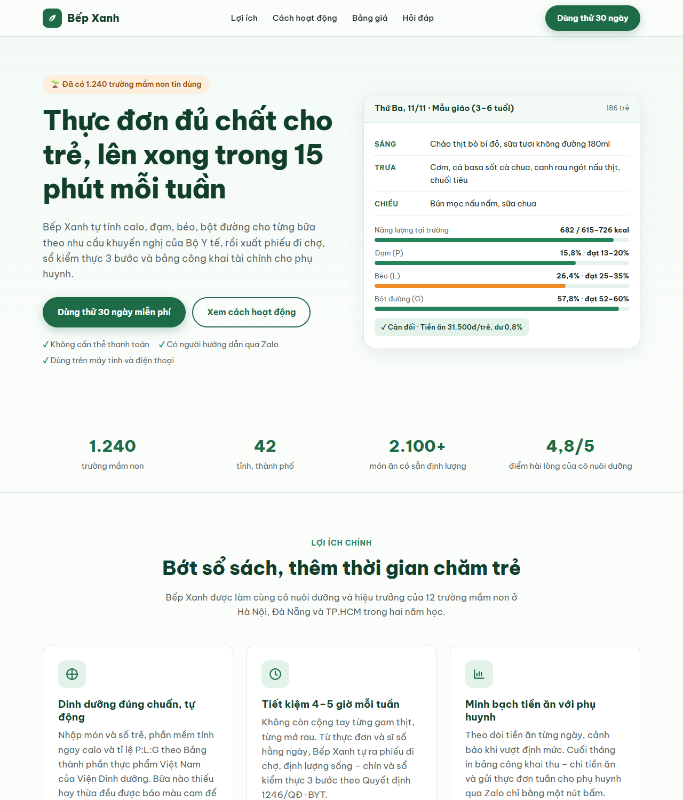

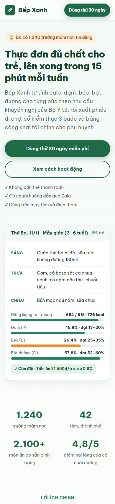
Y landing
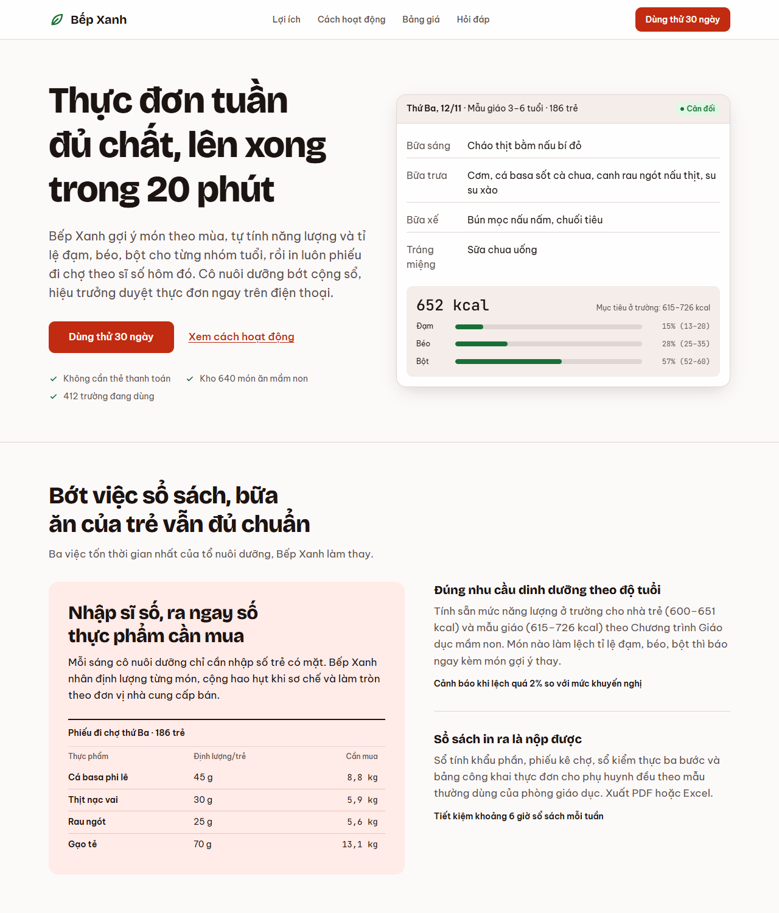
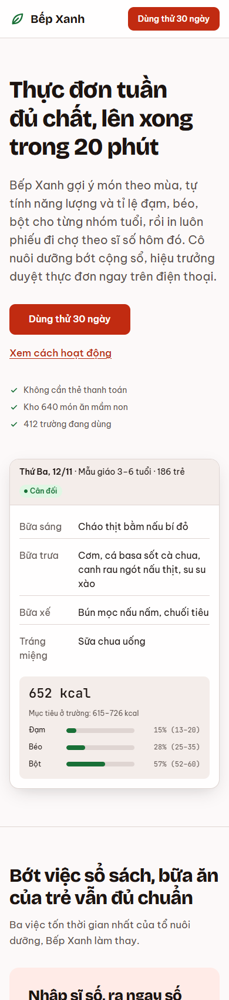
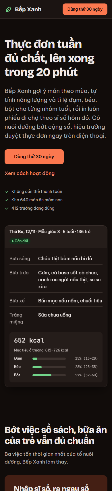
Đề 2: Dashboard "Tủ thuốc nhà"
Danh sách thuốc, cảnh báo hết hạn và sắp hết, lịch uống hôm nay cho từng người, tìm kiếm, thêm thuốc.
X dashboard
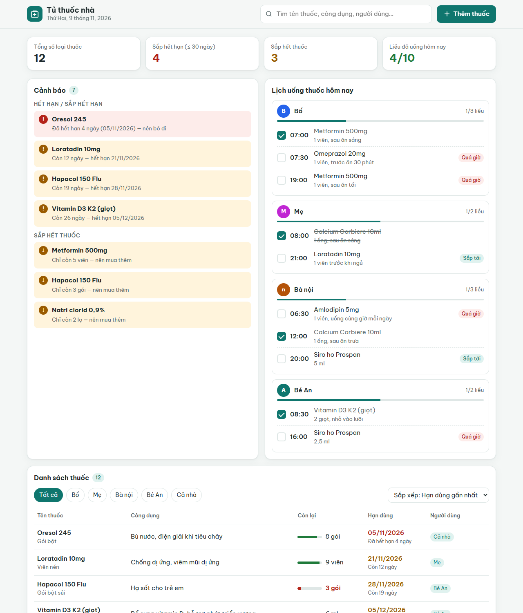
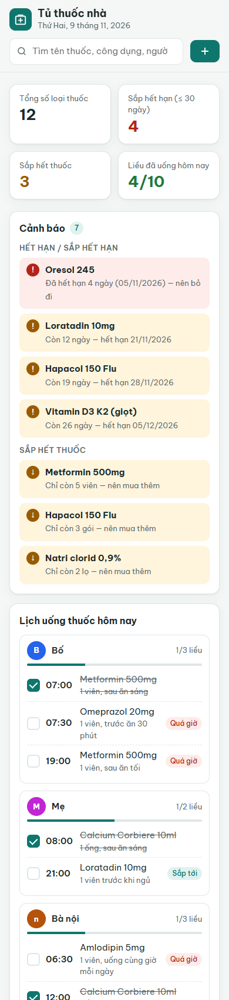
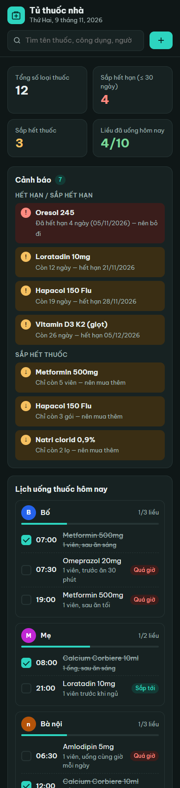
Y dashboard
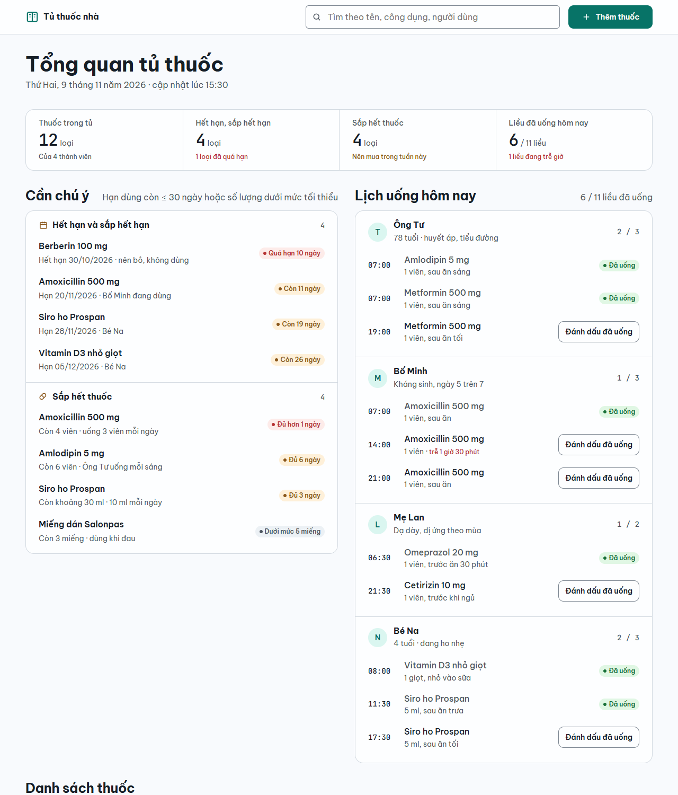
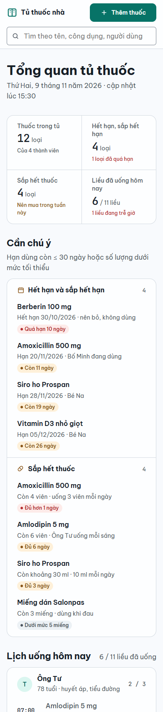
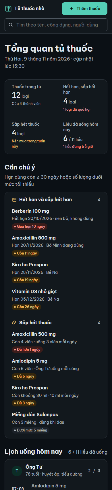
Đề 3: Form đặt lịch khám "Phòng khám Nhi An Bình"
Thông tin bé và phụ huynh, chuyên khoa, ngày và khung giờ còn trống, triệu chứng. Có kiểm tra lỗi, trạng thái đang gửi và màn hình xác nhận.
X form
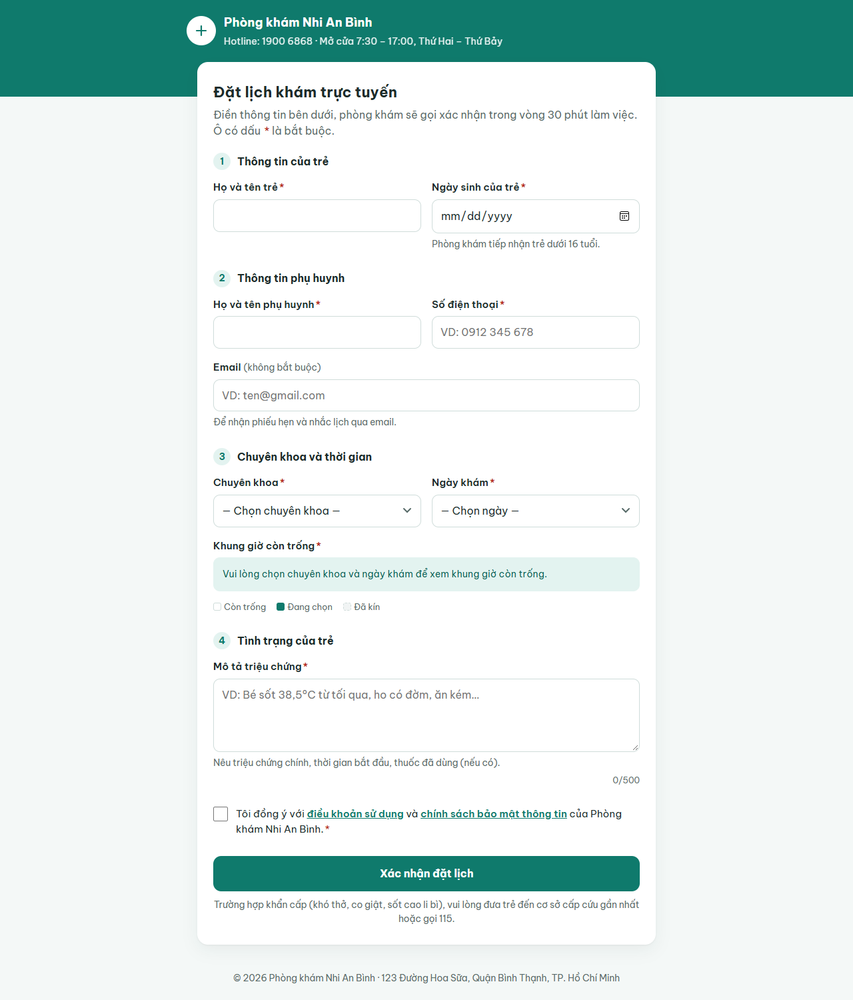

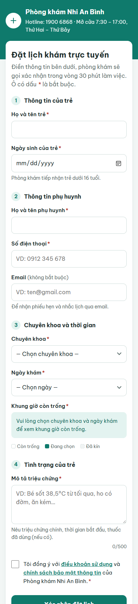
Y form
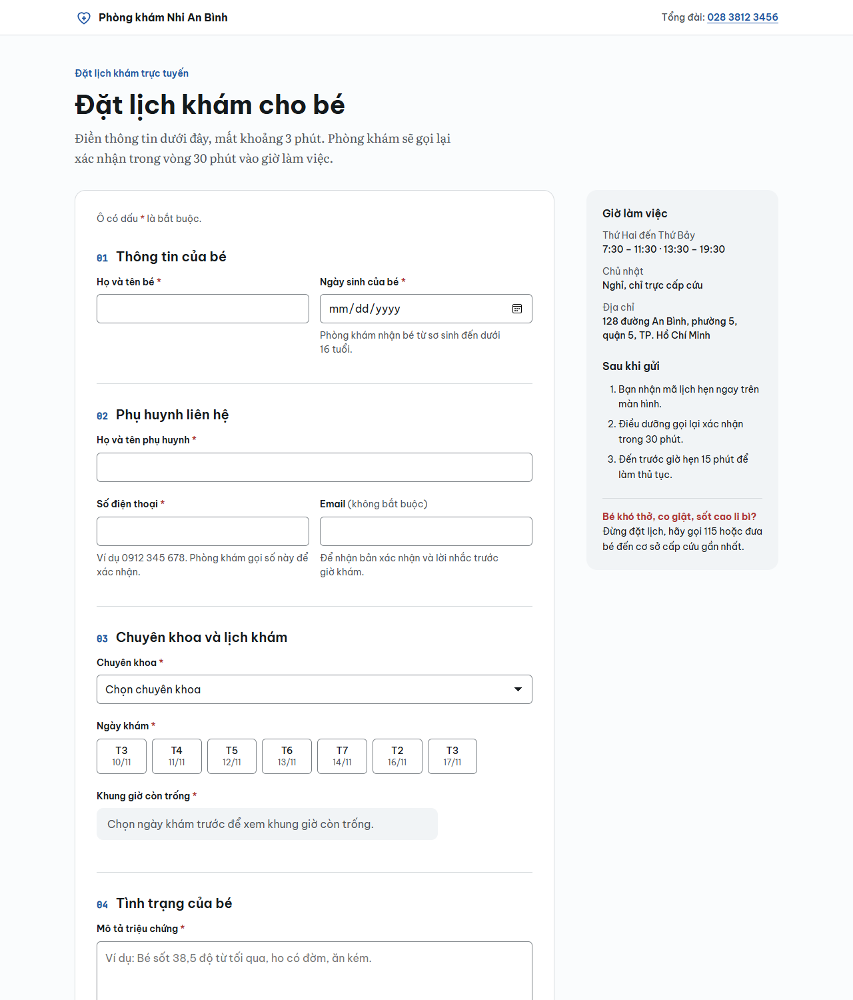
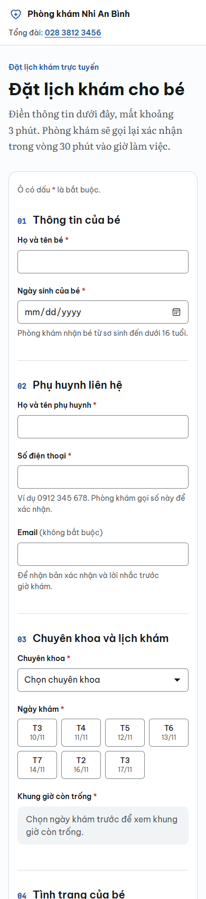
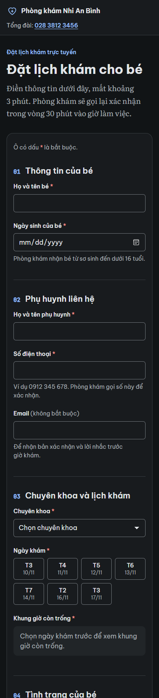